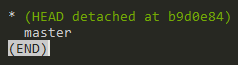
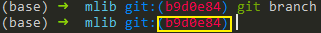

Git Submodule 攻略
TL;DR
1 | # Add submodule |
定义
git submodule允许用户将一个 Git 仓库作为另一个 Git 仓库的子目录。 它能让你将另一个仓库克隆到自己的项目中，同时还保持提交的独立性。
作用
在我这里，它的作用非常明确，即给在各个项目中都会用到的代码段一个公共栖息地，做到“一处改，处处改”。
常用命令
添加
git submodule add
1 | # 直接clone，会在当前目录生成一个someSubmodule目录存放仓库内容 |
添加完之后，子模块目录还是空的（似乎新版不会了），此时需要执行：
git submodule update --init --recursive
来真正将子模块中的内容clone下来。同时，如果你的主目录在其他机器也有了一份clone，它们也需要执行上面的命令来把远端关于子模块的更改实际应用。
Clone时子模块初始化
clone父仓库的时候加上--recursive，会自动初始化并更新仓库中的每一个子模块
1 | git clone --recursive |
或：
如果已经正常的clone了，那也可以做以下补救：
1 | git submodule init |
正常clone包含子模块的函数之后，由于.submodule文件的存在someSubmodule已经自动生成，但是里面是空的。上面的两条命令分别：
- 初始化的本地配置文件
- 从该项目中抓取所有数据并检出到主项目中。
更新
1 | git submodule update --remote |
Git 将会进入所有子模块，分别抓取并更新，默认更新master分支。
不带--remote的update只会在本地没有子模块或它是空的的时候才会有效果。
推送子模块修改
这里有一个概念，就是主repo中的子模块被拉到本地时默认是一个子模块远程仓库master分支的detached branch。这个分支是master的拷贝，但它不会被推送到远端。如果在子模块中做了修改，并且已经add，commit，那你会发现当你想要push的时候会报错：Updates were rejected because a pushed branch tip is behind its remote。这便是所谓的detached branch的最直接的体现。
解决方法是：在子模块中先git checkout master，然后在git merge <detached branch name/number>，最后git push -u origin master即可。
这里解释一下<detached branch name/number>这个东西可以使用git branch命令查看。如果你使用的是zsh，那么问题就更简单了，直接在命令提示符处就可以找到。

